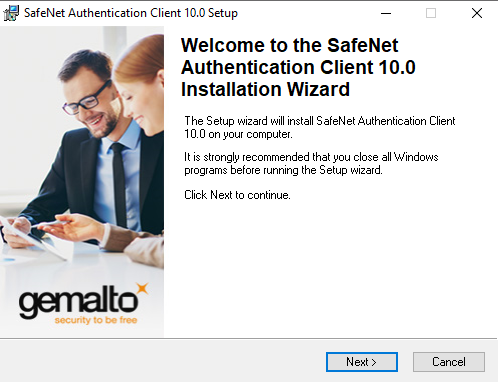
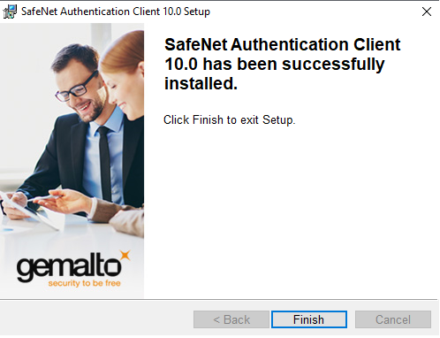

info@digilogix.com.ar
info@digilogix.com.ar
 Iniciar Sesión
Iniciar SesiónTOKEN SELECCIONADO: SAFENET 5110.
PASO 1: Descarga e instalación del Driver del token.
Haga click sobre el botón "DESCARGAR DRIVER" que se encuentra debajo de este párrafo y ejecute el archivo que se descargó.
DESCARGAR DRIVER



PASO 2: Configuración de ACROBAT READER.
Aclaración: Se recomienda el uso de ACROBAT READER DC (Versión gratuita) para la utilización de la firma digital.
Realizar los siguientes clicks, dentro de Acrobat Reader, en el siguiente orden:
- Edición.
- Preferencias.
- Firmas.
- Verificación.
- Más.
- Validando Firmas.
- Validando documentos certificados.
PASO 3: PASOS PARA FIRMAR UN DOCUMENTO (Solo en Acrobat Reader).
Realizar los siguientes clicks, dentro de Acrobat Reader, en el siguiente orden, y con el PDF que se quiera firmar:
- Herramientas.
- Certificados.
- Firmar Digitalmente.
- Aceptar.
- Realizar un recuadro con el mouse, dentro del archivo, donde desee colocar la parte visual de su firma digital.
- Seleccionar su firma digital, y pulsar "Firmar".
- Guardar el PDF firmado, con un nombre diferente al original.
- Ingresar contraseña del token.
- Pulsar "Aceptar".

PASO ADICIONAL: VALIDAR LA FIRMA DIGITAL Y QUE SE OBSERVE COMO VÁLIDA.
Haga click sobre el botón "DESCARGAR INSTALADOR" que se encuentra debajo de este párrafo y realice los siguientes pasos:
- Ejecutar el archivo que se descargó.
- Ejecutar con permisos de administrador el icono que se creó en el escritorio (botón derecho sobre el icono, "ejecutar como administrador").
- Cerrar el cuadro de diálogo que muestra 2 certificados con una tilde verde de "instalado".